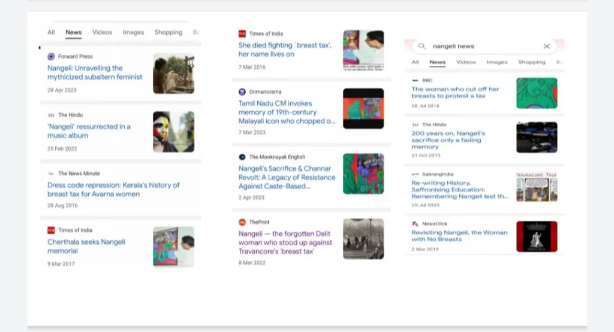

A historical perspective debunking the fictional narrative of Nangeli and the so-called breast tax
For years, social media has circulated a poignant tale of Nangeli, a woman from Kerala who allegedly cut off her breasts in protest against a so-called "breast tax" imposed on lower-caste women. This narrative, often accompanied by emotional art, videos, and blog posts, has been used to question Hinduism and paint a grim picture of caste-based oppression.
But how much of this is historically true? Let’s break down the propaganda, the evidence (or lack thereof), and the motivations behind this narrative.
विभिन्न वेबसाइटों पर नांगेली का वामपंथी प्रोपोगेंडा
The first recorded mention of Nangeli was in a fictional story by C. Radhakrishnan, published in The Pioneer on March 8, 2007. Characters like Nangeli and her husband Kadappan were created for this story.
In 2009, blogger Michael David amplified the tale, followed by news outlets like The Hindu and BBC in 2016.
The term "breast tax" first appeared in R.N. Yesudasan’s book A People's Revolt in Travancore (1975) and later in The History of the London Missionary Society in Travancore (1980). Yesudasan, associated with Christian missionary movements, provided no primary sources.
No official records from the Travancore kingdom mention such a tax. Historical sources like:
do not mention Nangeli or any “breast tax.”
Two frequently used black-and-white photos are often shown to depict lower-caste women oppressed by the “breast tax.” However, these images are not related to Travancore:
Dutch traveler William van Neuhof, who visited Travancore in the 17th century, described the attire of the queen and her attendants as being mostly topless. Even upper-caste Brahmin women, such as Savitri Antharjanam, did not wear upper garments, as seen in archival photos and works by L.A. Krishna Iyer.
This indicates that going topless was a norm across castes in pre-colonial Kerala — a cultural adaptation to climate, not a caste-imposed rule.
Visual and archaeological evidence from across India shows that bare-chested women were not uncommon, even among royalty and elite:
In many parts of India, particularly in matrilineal societies like Kerala, women chose attire based on climate, not shame or oppression. The human body was not sexualized as in Abrahamic cultures.
Missionary influence, colonial rule, and Western concepts of "modesty" reshaped traditional dress norms in urban areas, while rural areas retained traditional practices longer.
Fictional, created by C. Radhakrishnan in 2007, with no historical basis.
No official records exist; the term emerged in 1975 without primary sources.
Images are unrelated to Travancore, depicting Sri Lankan Rodiyas and Malabar Tiyans.
Dive deeper into debunking myths and uncovering the real history of India.
Read MoreThe tale of Nangeli and the breast tax is a powerful example of how false propaganda can spread when wrapped in emotion and artistic presentation. We must always verify what we consume to protect our understanding of culture, history, and identity.